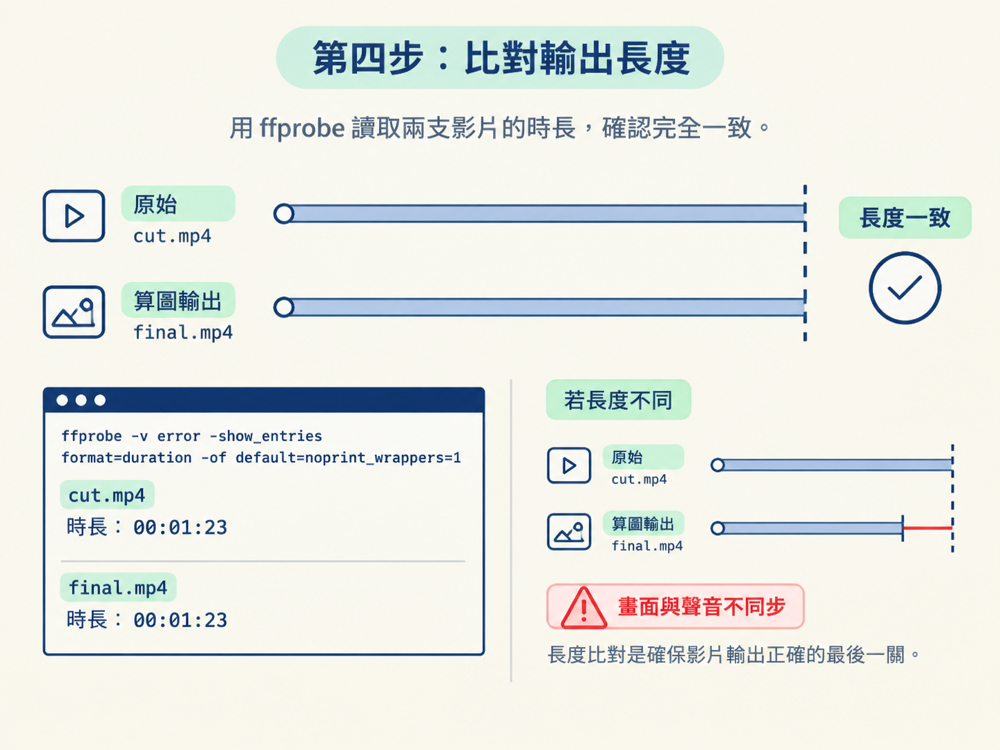

前面你已經在 Studio 的時間軸上確認好版本：卡片進場時間正確，字幕也沒有壓到人像。現在要把這個 composition 算成真正可以發布的 MP4。
但流程不是「按下算圖」就結束。你要先用 lint 檢查 composition，再算出影片，最後從開頭、中段和結尾各抽一格確認畫面。這就像出貨前的三道檢查：先查規格，再製作，最後打開箱子確認成品沒有瑕疵。
本課的目標是建立一個可以重複執行的節奏：算圖前先驗、算完再驗，並確認影片長度一致。
開始前，請先確認 composition 已經在 Studio 裡確認過版本；來源影片也必須是逐格 seek 安全的格式，也就是 1 秒 GOP。這項前置處理已在前一個節點完成。
完成這一課後，你會得到一支 1920×1080 的 MP4，並且能確認以下幾件事：
cut.mp4 完全一致，避免畫面與聲音不同步。在把 composition 送去算圖以前，先執行 lint。它會一次檢查所有與 composition 契約有關的問題，例如元素缺少時間屬性、對 clip 做動畫、同一軌道的片段重疊，或使用無限次重複的動畫。
請在專案目錄中執行：
npx hyperframes@latest lint預期結果是 lint 顯示 0 error。只要還有錯誤，就先回到 composition 修正，再重新執行 lint；不要帶著錯誤直接算圖。
可以把 lint 想成機場安檢。它檢查的問題，有些在預覽畫面中不一定看得出來，卻可能在算到某一格時才突然出錯。先花一點時間清乾淨，通常比算到一半才發現影片無法完成更省事。
確認 lint 已經是 0 error 後，才開始算圖。下面這個指令會輸出 MP4，設定 30fps、最高畫質、crf 16，並使用 GPU 編碼：
cd [project] && npx hyperframes@latest render \
-o renders/final.mp4 \
--fps 30 --quality high --crf 16 --gpu這個指令可以拆成幾個部分理解：
| 參數 | 作用 |
|---|---|
-o renders/final.mp4 | 指定輸出檔案的位置與名稱。 |
--fps 30 | 把輸出影格率設為 30fps。 |
--quality high | 選用最高的畫質等級。 |
--crf 16 | 提供接近視覺無損的畫質；數字越小，畫質越好，但檔案也越大。一般標準是 18 到 23。 |
--gpu | 使用 GPU 編碼，加快算圖速度。 |
其中 --crf 16 比一般的 18 到 23 更保守，代價是檔案較大，但畫面會更乾淨。最終成品通常只需要算一次，用較高畫質換取更乾淨的畫面，值得。
第一次算圖時，HyperFrames 會下載一份約 101 MB 的 Chrome。下載完成後會快取起來，之後不需要重複下載。
算圖完成，只代表檔案產生了；不代表影片已經可以交件。接著要從成品中抽出三個時間點，各看一格：開頭、中段和結尾。
這三個位置各自容易暴露不同問題：開頭可能漏掉片頭元素，中段通常是卡片最密集、最容易遮到臉的地方，結尾則可能出現元素飄出畫面或提早消失。
| 檢查點 | 要看什麼 |
|---|---|
| 開頭 | 片頭元素是否正確出現，沒有被裁掉。 |
| 中段 | 卡片或圖像是否遮到臉，是否跑出畫面邊緣。 |
| 結尾 | 所有元素是否正常收尾，沒有殘留或提前消失。 |
如果發現元素遮到臉或跑出畫面，請先修正再交件。這不是單純的美感偏好，而是硬性的品管條件：觀眾看不到表情，影片的說服力就會下降。
修正時，回到 composition 調整該元素的起點、長度或軌道，然後重新跑一次完整流程：
除了看畫面，還要確認輸出影片的長度與 cut.mp4 完全一致。畫面與聲音是分開處理的，只要長度差了一點，最後就可能出現嘴型與聲音對不上的情況。
抽格檢查時，順手用 ffprobe 之類的工具比對兩支影片的時長。只有畫面檢查通過、輸出長度也一致，這一關才算完成。

完成這套流程後，你手上會有一支 1920×1080 的 MP4。它保留原本剪好的內容，疊上與逐字稿對齊的動態圖像，聲音和畫面同步；同時 lint 沒有錯誤，抽格檢查也確認沒有遮臉、裁切或元素跑出畫面的問題。
你不再靠「看起來應該沒問題」來判斷影片是否完成，而是照著固定順序逐項確認：
cut.mp4 完全一致。之後每次算圖都照這個順序走，影片品管就會像一張可勾選的檢查表，而不是憑感覺猜測「應該可以了」。
算圖前先跑npx hyperframes@latest lint，確認回到 0 error 後才能算圖。算圖使用--fps 30 --quality high --crf 16 --gpu，composition 是 1920×1080，輸出也會維持這個尺寸。算完後抽查開頭、中段和結尾三格；凡是遮到臉或跑出畫面的元素都要修正，並確認輸出長度與cut.mp4完全一致，避免畫面與聲音不同步。
這個節點把四個部分串成一套可重複的算圖流程：composition 契約、對齊逐字稿的動態圖像、Studio 時間軸預覽，以及算圖後的抽格品管。至於看到成品後如何給回饋，以及如何只重算被點名的部分，會在下一個節點「執導」中處理。